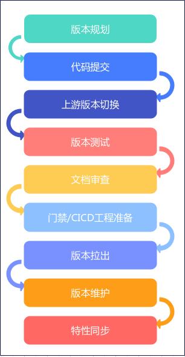
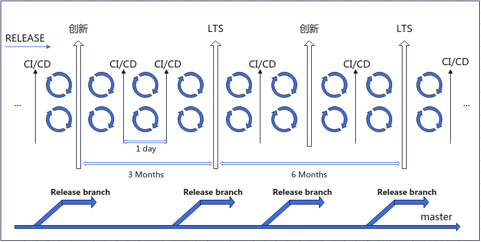
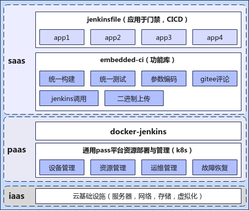
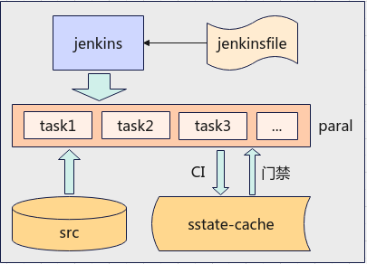
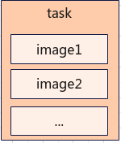
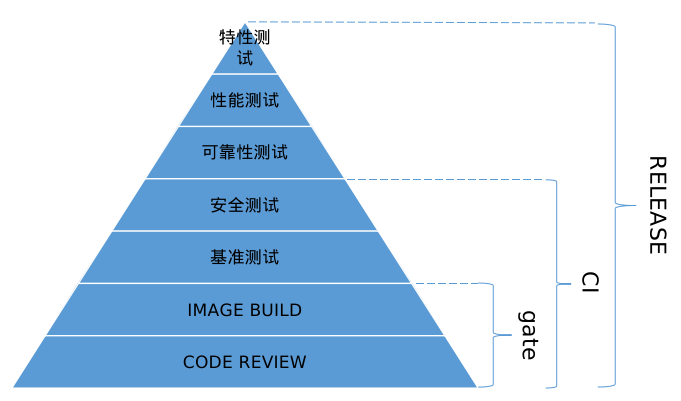

门禁与CI¶
openEuler基础设施本着高效、开放、简洁与测试全面的宗旨，对openEuler基础设施的发展方向指明了方向。
高效：多资源灵活调度，多镜像并行构建，预制源码节省下载时间，应用缓存提升构建效率。
开放：我们完全开放基础设施的运行流程，以开放的净胜面向开发者。执行内容完全可视，任何接受开源贡献协议的开发者都可以参与基础设施的制定，并修改执行内容。
简洁：基础设施全部采用jenkins工程+jenkinsfile模式运行，搭建简洁，只需要一台普通主机即可上手。
测试全面：多达8大类，200多项测试用例，全面覆盖基础功能，性能，安全，可靠以及相关特性，并执行严格的测试制度，确保每一个发布的版本其高质量的要求。
版本发布流程¶
openEuler Embedded在经历多个版本的发布后，通过经验总结出一套完善的版本发布流程，总共分为以下几部分：
版本规划：项目技术经理组织项目组成员对下一阶段版本特性进行讨论，决策，制定开发计划，由对内对外相关项目方需求来确定版本特性，版本经理需对版本特性做好整理，并跟踪相关方面的提交
代码提交：针对版本规划做针对性的代码提交，目的是达到对版本相关特性进行顺利交付，版本经理需对pr进行实时跟踪
上游版本切换：针对上游源码包发布的版本做适配，为本次版本发布做铺垫，版本经理需在上游版本发布后根据版本规划做工作量评估，做好任务分工，并组织相关开发人员完成软件包版本切换工作
版本测试：版本发布前的测试工作，包括基准测试，性能测试，安全测试，特性测试等，该项工作由openEuler内部计算方主导（如果版本经理由外部人员担任，可直接通过技术经理获取测试相关事项），测试中发现的问题会以issue方式提出，因此需要版本经理在这个阶段实时关注版本issue，并追踪解决，在测试工作开始前由测试部牵头做测试计划，并会组织会议做宣讲，版本经理会受邀参加，版本经理需要了解整个测试计划
文档审查：针对该版本相关的改动需要对对应的文档说明做更新，或者添加说明，版本经理需要将不同的版块做审查分配并监督各负责人完成各自负责的版块儿审查，同时版本经理要写release log，对该版本的变更做总结性说明
门禁/CICD工程准备：版本发布前需要根据版本特性搭建该版本的门禁，CICD工程，使版本发布时配到的门禁，CICD可以无缝过渡
版本拉出：版本发布时相关代码仓maintainer根据版本规划拉出对应版本，一般来说源码仓跟随openEuler版本规则与节奏走，其他依赖代码仓根据版本规划的版本策略自由制定，版本经理需对版本拉出制定时间节点，并督促前期准备工作按时完成
版本维护：版本拉出后进入一段时间的版本维护周期，这个阶段主要是针对新版本发布后根据用户的使用反馈进行完善，有bug则进行修复，有遗漏则进行补充，使版本进入一个稳定状态，这段时间一般为一个月周期，版本经理需对该版本的提交负责
特性同步：版本维护阶段过后，需要根据发布版本出现的补充提交回合到master分支，版本经理需要梳理版本分支与master分支差异性，并在小组例会做出回合决策，然后实施回合
版本发布节奏跟随openEuler版本走，以3个月为单位周期，创新版本与常稳版本间隔发布，因此创新版本与常稳版本的发布间隔为6个月，版本发布节奏如下图所示：
门禁/CICD¶
门禁功能：对将要合入的代码做初步检查，主要关注代码规范，commit规范，文档与基本镜像的构建，门禁的运行脚本以jenkinsfile的方式存放在源码目录下，存放路径为.oebuild/workflows/jenkinsfile_gate
CICD：每日对现有的源码进行构建，构建出的镜像以架构为准进行分类并上传到2进制发布平台供开发者下载，构建出的镜像也会做基准测试与安全测试，构建或测试失败会以issue的方式对外发布，以便得到实时跟踪解决，确保在下一阶段准备发布的版本基础功能与安全验证全部通过，CI的运行脚本以jenkinsfile的方式存放在源码目录下，存放路径为.oebuild/workflows/jenkinsfile_ci
门禁/CICD组织结构图如下：
依托底层k8s平台上的jenkins，门禁与CICD各自维护自身的jenkinsfile，通过jenkins工程的调用与解析来实现门禁与CICD的运行，所有jenkinsfile中的功能模块全部来自于embedded-ci库，该库的作用是支撑门禁/CICD等公共基础设施的功能仓。
openEuler的门禁与CICD为了提高运行效率，采用了镜像并发的构建方式，并将源码内置到构建容器中以降低源码下载所用的时间，同时通过每日CI定时生成sstate-cache构建缓存用来提高门禁的运行效率，以此达到门禁与CI的高效率运作。详细的调用方式如下图所示：
 Note
在这里需要注意的是，如果硬件资源不足以支撑大规模并发构建，即CPU无法同时支撑大数量容器运行，则建议修改jenkinsfile中build task中的镜像构建内容，目前一个task为一个镜像构建，可以根据实际情况修改为两个或者三个镜像构建为一组task
测试全面性¶
openEuler的测试在版本发布的各个阶段测试内容有所差异，总体而言是越趋向于版本发布测试内容越多越全面。目前的测试主要面向三个环节，gate、CI与RELEASE，gate即为门禁，主要承担代码检查与基础镜像构建，CI添加了基准测试与安全测试，在版本发布阶段，又增加了可靠性测试、性能测试与特性测试。如下图所示：
